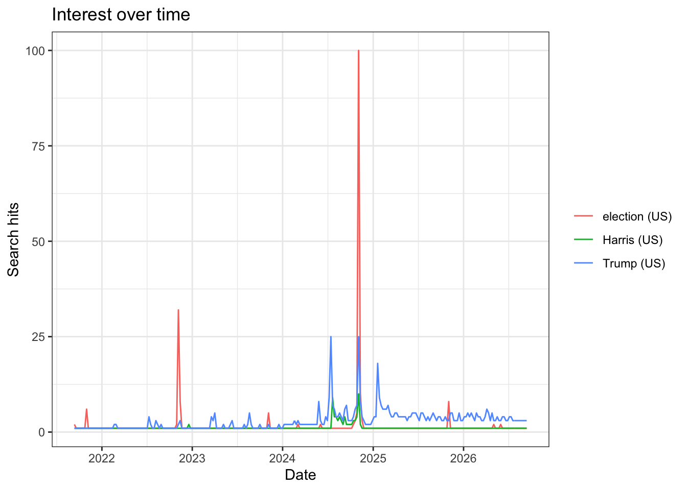

What you will produce:The same Google Trends series pulled two ways — once by hand from the website, once from R with gtrendsR — and a short note on what differs between them and why.
A. Google Trends
1. Collect it from the website
a. trends.google.com
Go to https://trends.google.com and search Trump, Kamala Harris and Election.
What is the interval — hourly, daily, weekly, monthly? Now change the date window and download again csv. Did the interval change?
The five-year dataset uses monthly observations. After changing the window to “Last 24 hours,” the interval changed to 16 minutes because Google Trends automatically adjusts its temporal resolution to the selected time window.
c. What are the units? What does a value of 100 mean, and 0?
These are a normalized search-interest index from 0–100, based on the proportion of searches for the term relative to all searches in the selected place and time period.
100 = the point of peak relative search interest within the selected dataset.
50 = relative search interest was half the peak level.
0 = insufficient search volume to report a value; it does not necessarily mean zero searches occurred.
d. Now remove one search term and download again.
Did the numbers for the remaining terms stay the same?
Dropped Trump from the Past 5 years search. The values for Kamala Harris and Election stayed exactly the same across all 61 monthly observations. Removing Trump did not alter the scale in this comparison because Election still supplied the peak value of 100, while Trump had a maximum value of 40. csv
3. Collect it from R
a. gtrends package
Use the gtrendsR package and the gtrendsR01.R program. The first call in that script is the same query you just ran by hand:
library(gtrendsR)library(readr)# Store successful Google Trends downloads here.cache_dir <-"_gtrends_cache"dir.create(cache_dir, showWarnings =FALSE)# Download each query only once. If Google temporarily blocks the request,# retry with exponential backoff until a successful result is returned.# Once saved as an RDS file, future renders read the local file and never# contact Google Trends for that query again.cached_gtrends <-function(cache_name, ..., initial_wait =60, max_wait =600) { cache_file <-file.path(cache_dir, cache_name)if (file.exists(cache_file)) {return(readRDS(cache_file)) } attempt <-1Lrepeat { result <-tryCatch(gtrends(...),error =function(e) {message("Google Trends request failed on attempt ", attempt,": ", conditionMessage(e) )NULL } )if (!is.null(result)) {saveRDS(result, cache_file)message("Google Trends data saved to: ", cache_file)return(result) } wait <-min(initial_wait *2^(attempt -1L), max_wait) wait <- wait +runif(1, 0, 15)message("Retrying in ", round(wait), " seconds...")Sys.sleep(wait) attempt <- attempt +1L }}TrumpHarrisElection <-cached_gtrends("trump_harris_election_us_5y.rds",c("Trump", "Harris", "election"),onlyInterest =TRUE,geo ="US",gprop ="web",time ="today+5-y",category =0)the_df <- TrumpHarrisElection$interest_over_timeplot(TrumpHarrisElection)

Weekly relative search interest for Trump, Harris, and election in the United States, September 2021–September 2026.
# CSV copy for inspection, publication, or use outside R.csv_file <-"trump_harris_election_us_5y.csv"if (!file.exists(csv_file)) {write_csv(the_df, csv_file)}
The Harris and Kamala Harris series are not the same. Across 262 weekly observations, the mean Google Trends index was 9.19 for Harris and 2.02 for Kamala Harris, an average gap of 7.17 points. Harris had the higher value on all 262 dates. These normalized values show relative interest within this joint comparison; they are not raw search counts.
b. Harris
Harris is also a county, a supermarket chain, and several thousand other people. What does that gap tell you about the difference between a search term and the concept you meant to measure?
This gap shows that a search term is not necessarily identical to the concept being measured. Harris is an ambiguous term that can capture searches concerning Kamala Harris as well as unrelated people, places, and organizations. The results do not reveal how much of the broader Harris series actually concerns Kamala Harris. Therefore, using Harris to measure interest in Kamala Harris introduces measurement error, while the more specific Kamala Harris query better represents the intended concept.
4. Compare the two methods
a. Line the two series up. Are the numbers identical? If not, by how much, and in which direction?
The website query used Kamala Harris, while the R script used Harris. To avoid treating those different search terms as equivalent, this comparison uses the two terms shared by both pulls: Trump and Election. The website data are monthly, whereas the R data are weekly, so the R observations are averaged by month and rescaled to a 0–100 index. The incomplete first and last months are excluded, leaving 59 complete months for each term.
Monthly Google Trends indices from the website and R for the two shared search terms, October 2021–August 2026.
The numbers are not identical: 117 of 118 matched term-month observations differed. Across both terms, the mean absolute difference was 0.81 points and the maximum absolute difference was 4.61 points. On average, the R index for Election was 0.52 points higher than the website index, while the R index for Trump was 0.4 points lower. Despite the small numerical differences, the series have very similar shapes: their correlations are 0.997 for Election and 0.994 for Trump. This remains an approximate comparison because the original queries used different Harris terms and Google Trends relies on sampled, normalized data.
b. What are the differences between the two methods? Consider at least:
i. Reproducibility — could someone else regenerate your file exactly?
Neither method guarantees that another person can reproduce the exact values by making a new request, because Google Trends draws from sampled data and a moving “last five years” window. The R method makes the procedure more reproducible because the code records the query and analysis steps. Exact numerical reproduction depends on retaining and sharing the cached raw data used for the analysis.
ii. Provenance — which method records the query parameters for you?
The R method provides stronger provenance because the function call explicitly records the search terms, geography, time window, category, and search type. The website download requires those selections and the pull time to be documented manually in a datasheet; the CSV alone does not preserve the complete collection procedure.
iii. Scale — what happens when you need fifty terms instead of three?
Collecting fifty terms manually would require many repeated website searches and downloads, increasing both labor and the risk of inconsistent settings. R can automate the repeated calls, file naming, validation, and caching. However, the terms must still be divided into batches because the service limits comparisons, and the batches need a shared anchor term if their separately normalized indices are to be placed on a common scale.
iv. Fragility — what breaks, and how would you know?
The website method is vulnerable to interface changes, inconsistent manual selections, and misplaced downloads. The R method depends on gtrendsR and an unofficial endpoint, so changes to the service can break requests or parsing; rate limiting can also return errors such as HTTP 429. Failures should be detected by checking request errors, expected columns, date ranges, row counts, missing values, and the 0–100 range before analysis. Caching the first successful pull prevents later endpoint failures from changing an already completed analysis.
c. Run section 7 of the script: the same call twice, a few minutes apart.
Do you get the same numbers?
# These use two different cache files intentionally so the assignment captures# two Google Trends samples collected three minutes apart. Each sample is# downloaded only once.first_cache_name <-"repeat_trump_harris_election_spaced_1.rds"second_cache_name <-"repeat_trump_harris_election_spaced_2.rds"repeat_pull_1 <-cached_gtrends( first_cache_name,c("Trump", "Harris", "election"),onlyInterest =TRUE,geo ="US",gprop ="web",time ="today+5-y",category =0)# Wait only when the second sample has not yet been cached. Later renders reuse# both files without waiting or contacting Google Trends again.second_cache_file <-file.path(cache_dir, second_cache_name)if (!file.exists(second_cache_file)) {message("Waiting three minutes before the second pull...")Sys.sleep(180)}repeat_pull_2 <-cached_gtrends( second_cache_name,c("Trump", "Harris", "election"),onlyInterest =TRUE,geo ="US",gprop ="web",time ="today+5-y",category =0)repeat_pull_times <-data.frame(pull =c("Pull 1", "Pull 2"),cached_at =file.info(file.path( cache_dir,c(first_cache_name, second_cache_name) ) )$mtime)repeat_pull_times
The two pulls did not return exactly the same values. Of the 786 matched observations, 15 differed. The mean absolute difference was 0.02 points, and the maximum absolute difference was 1 point.
The first pull was cached at 2026-09-15 09:12:36 CDT, and the second was cached at 2026-09-15 09:15:37 CDT.
What does your answer imply about every finding you might report from this source?
Because Google Trends uses sampled and normalized search data, its values should be interpreted as estimates rather than exact counts. Repeated pulls may produce slightly different values, although the broad pattern may remain stable. Each successful pull should therefore be cached, documented, and interpreted without overemphasizing small numerical differences.
B. Write it up
a. One page, in Quarto, with your code and at least one plot.